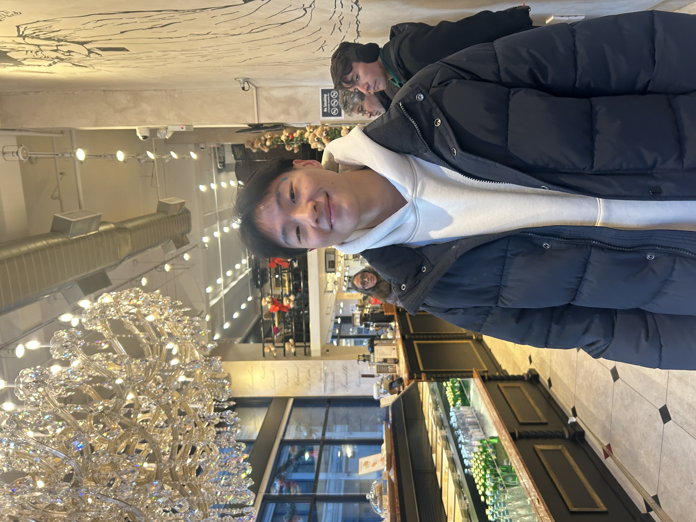

Hi, I'm Justin Chen — born and raised in Queens, New York, and currently pursuing a Bachelor of Engineering in Mechanical Engineering at The Cooper Union’s Albert Nerken School of Engineering. I’m a rising junior with a strong interest in mechanical design and manufacturing.
Over the past few years, I've been fortunate enough to work on engineering projects that have taken me through different corners of the field — from aerospace to mechatronics. Each experience has helped me grow in a different way, whether it be developing my research skills, deepening my understanding of design, or enhancing my hands-on abilities in manufacturing. Among the work I’ve accomplished so far, I’m most proud of designing a mechanical rectifier and a vending machine, both of which you can find in the Projects section.
As I continue my journey, I'm excited to keep learning. I look forward to each new opportunity that encourages me to grow in the mechanical engineering field.